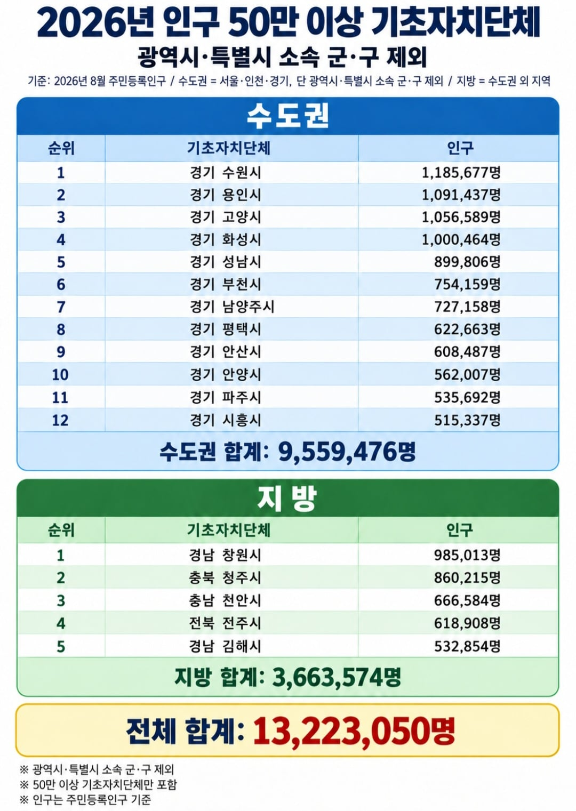

지방에는 광역시, 통합특별시 제외
인구 50만 이상 기초자치단체가 5개밖에 없음
포항은 50만이 붕괴됐는데
이북5도가 보이는 김포는 조만간 50만 달성 예정임

지방에는 광역시, 통합특별시 제외
인구 50만 이상 기초자치단체가 5개밖에 없음
포항은 50만이 붕괴됐는데
이북5도가 보이는 김포는 조만간 50만 달성 예정임
일단 지거국을 연고대~서울대 급으로 세게 만들고, 각 기업들 지방으로 보내야 서울공화국 안 될 텐데 차라리 통일하거나 일본 식민지 만드는 게 빠를 듯
지방도 기반 잡힌 광역시 한군데, 많아야 두군데? 에 몰빵해야 될까말까임 한국은 지방 여기저기 동시에 키울 역량 안됨.
저 수도권 대부분의 도시들이 2010년 이전만해도 그닥 큰도시도 아니엇음 엄청나게 급성장한거
청주는 하이닉스 때문인거야?
사실상 경기도 대부분의 도시가 50만 이상이네
천안도 수도권 아님?
천안은 충청도인데요
언저리
수도권규제를 피해가는 가장 가까운 지방
김해 화이팅

서울경기권 애들이랑 지방민이랑 선거에서 투표에서 똑같은 1표인데 가치는 다름
이게 존나 좆같은 거지
지방은 이러다 외노자월드 찍겠어 ㅋㅋ 구라안치고 벌써 경기외곽 도시들은 외노자만 보이는 곳도있음 지방은 말할것도없지 ㅋㅋ
포항 인구 -1 기여한 나.
포항에 일 할데는 많긴 한데 철강, 제조업 등등 아니면 그냥 서울올라오게 되드라. 특히나 IT 미디어 디자인 등등 그런 쪽으로는 거의 읎음. 그래도 멱색의 공업도시라 대구보단 일자리 천지삐까리라가 인구 줄어도 느리게 줄어드는듯.
아 근데 재발 뻐스 노선 케택스 쪽 가는거 삥둘러가는거 존나 답답한데 좀 노선개편 좀 했으면. 용흥동 쪽으로 뻐스 가소 새천년대로 그쪽으로 가면 길도 낣은데 아니.존나 신호많고 좁아터진 죽도시장 쌍사 교보 이렇게 존니 통과해가니 남구사는사림들은 걍 죽어욧!!
멱색은 무슨 말이야? 먹색? 미역색?
명색이....
아 ㅋㅋㅋ 다른개붕이가 알려줬넹 오타냄 명색 ㅇㅇㅇ
인구보다 산업비중의 문제가 크다
온갖 it산업 첨단산업 죄다 수도권이라
왜인줄 암?
공장이 돌아가려면 원자재가 있어야하는데
첨단산업의 원자재는 인구야
존나무한루프임
삼성과 소부장 업체있는 천안 하이닉스 청주
힘내라 아산씨티
천안도 평택도 삼성이 들어오면서 인구 뻥튀기 됨
2000년대 초반만 해도 평택 40만 대고 천안도 30만 대였음
저기 언급되는 지방 도시들은 주변 다른 곳들 대비 양질의 일자리가 많은 곳들임
기업을 분산을 시켜야 되는데 그게 될지